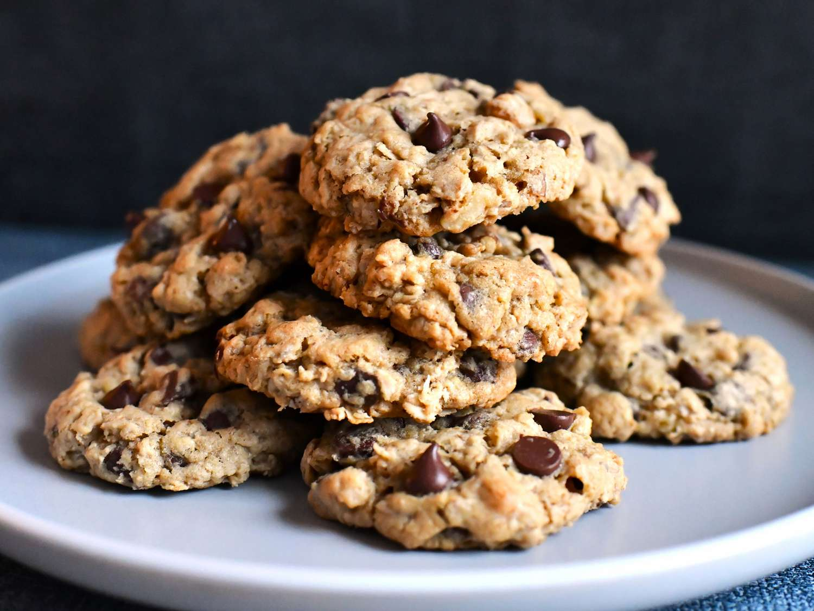

Oatmeal Chocolate Chip Cookies Recipe

Absolutely delicious oatmeal chocolate chip cookies. For this you'll
need:
- 1 cup butter, softened
- 1 cup packed light brown sugar
- ½ cup white sugar
- 2 large eggs
- 2 teaspoons vanilla extract
- 1 ¼ cups all-purpose flour
- ½ teaspoon baking soda
- 1 teaspoon salt
- 3 cups quick-cooking oats
- 1 cup chopped walnuts
- 1 cup semisweet chocolate chips
- Gather the ingredients. Preheat the oven to 325 degrees F.
- Combine flour, baking soda, and salt in a medium bowl. Set aside.
- Beat butter, brown sugar, and white sugar together in a large bowl until smooth. Beat in eggs one at a time,
until well combined; stir in vanilla extract.
- Stir flour mixture into egg mixture until just blended. Mix in quick oats, walnuts, and chocolate chips.
Drop batter by heaping spoonfuls onto ungreased baking sheets.
- Bake in the preheated oven for 12 minutes. Allow cookies to cool on baking sheet for a few minutes before
transferring to a wire rack to cool completely.